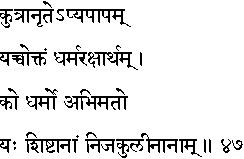
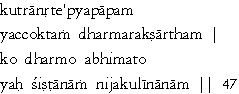

|

|
Verse 47 - Meaning:
Q:When can (kutra) telling an untruth (anrte) be considered not a sin ? (apya-paapam)
A:When that is the one and only way (yaccoktam) to protect one's Dharma. (dharma-rakshaartham).
Q:What is (ko) Dharma?
A:The traditions (yah-sishtaanaam) that one's respected ancestors (abhimato) have observed. (nija-kuliinaanaam)
|